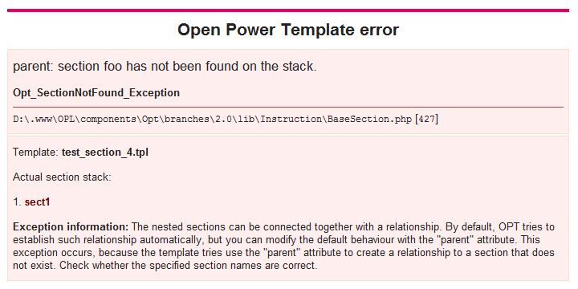

- 4. Programmer's Guide
4.4. Error handling - 4.3. Working with output systems
« Previous - 4.5. Working with sections
Next »
4.4. Error handling
Another aspect of Open Power Template 2 that needs to be described is the error handling. The library provides a significant number of tools that help you discovering and eliminating problems. In this chapter, we will describe all of them.
OPT errors
OPT reports the errors as PHP exceptions. Each error type has its own exception class and all of them share the same base exception class, Opt_Exception, derivated from Opl_Exception. Moreover, the certain groups of exception have also their own base classes in the middle. The modularization helps the programmer to choose, which exceptions must be handled in the specified piece of code. To see the list of available exceptions, please read the Error messages appendix.
Basically speaking, capturing a thrown exception is nothing more but using the try ... catch construct:
try { // The script that uses OPT goes here. } catch(Opt_Exception $exception) { // The exception handling code goes here. }
Default exception handler
A common practice is to let the programmer to write the exception handler that will handle information about the problem somehow. The application usually provides an exception handling system, for example some sort of log files etc. but the displayed messages are often very laconic and hard to understand, especially for the new library users. On the other hand, Open Power Template provides a standard error handler that aims to display as much information about the problem, as possible. It respects the debugging settings and does not display any potentially dangerous pieces of information in the production mode, whereas in the development mode its diagnosis may be very helpful.

In the picture, we can see that OPT error handler displayed the exception message and the place where the exception occurred. Moreover, it noticed that the exception concerns template compilation and sections and provided some extra data:
- The name of the template that caused the problem.
- The current stack list that allows us to notice that we do not have a section named "foo" on the stack.
- The information explaining, why the exception probably occurred and where to look for the solution.
To use the exception handler, you must create an object of Opt_ErrorHandler class and call the display() method:
$handler = new Opt_ErrorHandler; $handler->display($exception);
To respect the tradition and the OPT 1.x legacy, OPT 2 provides also a function Opt_ErrorHandler() that does exactly the same task (in fact, it is only a wrapper for the code above).
If the exception is thrown during the template execution or compilation, the compiler state is reseted, so that it could be usable again, and the exception handler removes the already printed output HTML from the buffer.
Extending the exception handler
You can easily extend the default exception handler with extra functionality by overriding the default Opt_ErrorHandler class. The OPL core provides the necessary framework to process the context exception information and all we have to do is to specify, what to display when a certain exception occurs.
The context information is stored in the protected variable $_context. It is automatically initialized by Opt_ErrorHandler, so if you do not want to loose this information, you have to fill it in the class constructor:
<?php class My_ErrorHandler extends Opt_ErrorHandler { public function __construct() { $this->_context['ExceptionName'] => array('The configuration'); } // end __construct(); } // end My_ErrorHandler;
As you see, the $_context field is an associative array and the keys are exception class names. As a value, we provide another associative array with a list of informer that can display various data.
Informer is a special method in the OPL error handling utility that is able to display something in the exception report.
Below, you can find a sample configuration of the OPT exception shown on the screen above.
$this->_context['Opt_SectionNotExists_Exception'] = array( 'TemplateInfo' => array(), 'StackInfo' => array(1 => 'Actual section stack'), 'ErrorInfo' => array(1 => 'The nested sections can be connected together with a relationship. By default, OPT tries to establish such relationship automatically, but you can modify the default behavior with the "parent" attribute. This exception occurs, because the template tries use the "parent" attribute to create a relationship to a section that does not exist. Check whether the specified section names are correct.') );
This exception is handled by three informers and two of them accept arguments. The arguments for an informer are provided as a list of values indexed from 1.
The list of informers provided by OPT and OPL can be found below:
ErrorInfo- used to display some extra information about the exception.StackInfo- prints a stack that has been assigned to the particular exception. Our task is to give it a name.BasicConfiguration- prints the basic library configuration.Backtrace- prints the debug backtrace.TemplateInfo- shows the name of the currently compiled template.BugtrackerInfo- informs that the exception is caused by a bug in the library and it should be reported to the developers.
Writing your own informer is very easy. All you have to do is to create a protected method _printInformerName() with at least one argument (the first one must be always the exception we are displaying). We can display the text, using the basic echo subroutine:
protected function _printMyInformer(Opt_Exception $exception, $argument) { echo 'I am the informer and I have an argument: '.$argument; } // end _printMyInformer();
You can now use it in your exception context definition:
$this->_context['Opt_Some_Exception'] = array( 'MyInformer' => array(1 => 'Some argument') );
PHP Bug #40479 problem
PHP Bug #40479 is a bug found in Zend Engine 2 memory management code in 2007. It seems to appear only in certain, complex scripts and causes the PHP parser to make a segmentation fault. It is very hard to track and so far, nobody has managed to create a simple test case that could give a clue, why it exactly occurs. Unfortunately, one of the OPT code parts is affected by the problem. If the data format parser tries to raise Opt_APIHookNotDefined_Exception, the script goes down. This is only a minor issue and unless you are writing your own data format, you should never encounter it, however we decided that in this particular case OPT will display the error message with a simple die() subroutine in order not to lead to a potential damage of your data.
Conclusion
Open Power Template 2 reports the errors with the exception system. You can handle them on your own or use the standard error handler provided by OPT. It is very helpful in the problem diagnosis, as it tries to show extra potentially useful information and tips, where to look for the solution.
- 4.4. Error handling
4. Programmer's Guide - « Previous
4.3. Working with output systems - Next »
4.5. Working with sections